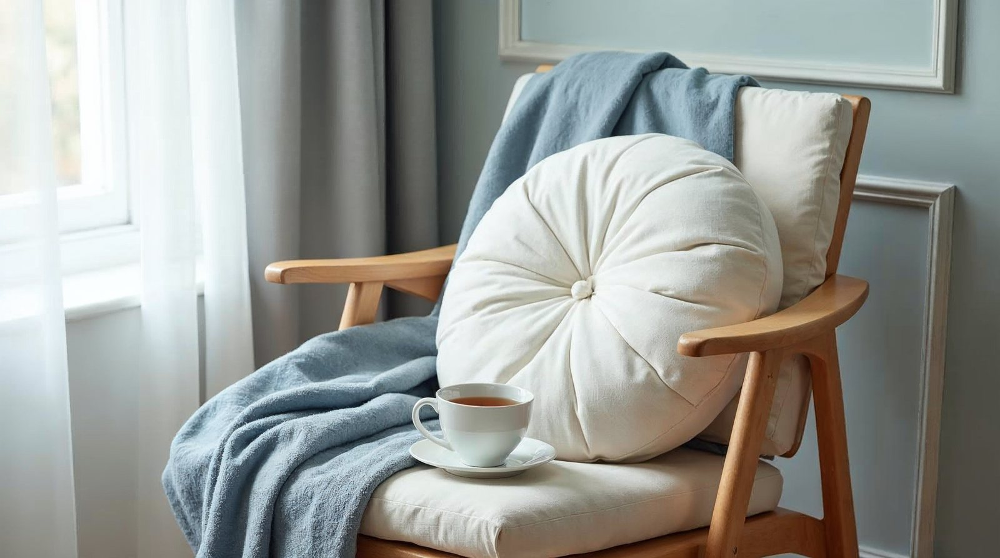
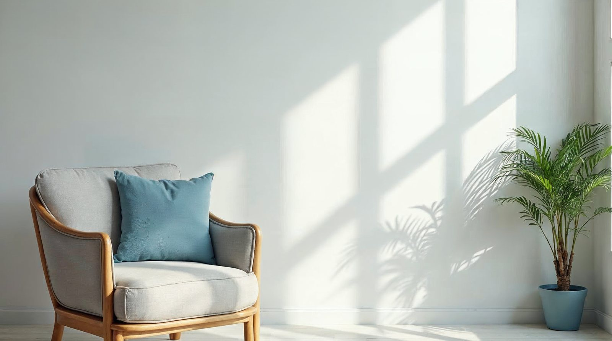
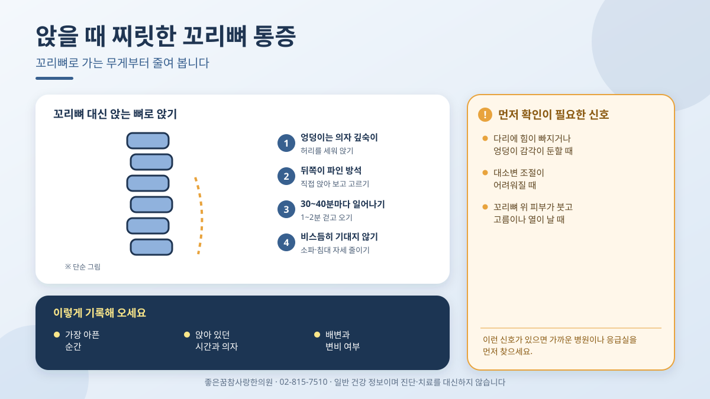

이종호 한의사 감수좋은꿈참사랑한의원 대표원장 (한의사 면허번호 19769)발행 2026-11-26 · 수정 2026-11-27
이 글의 차례
버스 좌석에 앉는 순간 엉덩이 맨 아래, 엉덩이골이 시작되는 자리가 찌릿해요. 몸을 앞으로 기울이거나 한쪽 엉덩이로 비스듬히 앉으면 조금 덜하지만, 내릴 때 일어서는 순간 다시 같은 자리가 콕 찌르죠. 결국 서서 가는 쪽을 택하게 됩니다.
꼬리뼈 통증은 남에게 말하기 조금 쑥스러운 자리라서 오래 참다가 오시는 분이 많아요. "앉는 게 이렇게 힘든 일인 줄 몰랐어요." 진료실에서 종종 듣는 말이에요. 앉아서 일하고 공부하는 시간이 긴 요즘엔 하루의 대부분이 불편해지는 셈이니 지치실 만해요. 쑥스러워하실 필요 없어요. 저한테는 흔히 듣는 얘기거든요.
꼬리뼈는 척추의 맨 끝, 엉치뼈 아래에 붙은 작은 뼈예요. 서너 개의 작은 뼈가 이어져 살짝 앞으로 굽어 있고, 여러 근육과 인대가 이곳에 붙어 있어요. 앉을 때 몸을 받쳐 주는 세 지점 가운데 하나라서, 이 자리가 예민해지면 앉는 일 자체가 힘들어지는 거예요.
그러니까 사실은 두 가지를 나눠 보셔야 해요. 꼬리뼈 '뼈 자체'가 다친 것과, 꼬리뼈에 붙은 '근육과 인대가 예민해진 것'은 다른 얘기예요. 오늘은 꼬리뼈가 왜 아파지는지, 비슷한 자리의 다른 불편과는 어떻게 나눠 보는지, 앉는 법과 방석은 어떻게 고르면 좋은지, 한의원에서는 무엇을 함께 살피는지 말씀드릴게요.
꼬리뼈 통증은 어떤 상태인가요?
똑바로 앉으면 우리 몸은 양쪽 엉덩이 아래 앉는 뼈 두 개와 꼬리뼈, 이렇게 세 지점으로 무게를 나누어 받칩니다. 몸을 뒤로 기대면 꼬리뼈 쪽으로 무게가 더 실리고, 앞으로 숙이면 앉는 뼈 쪽으로 옮겨 갑니다.
꼬리뼈 통증은 이 꼬리뼈와 그 주변 인대, 꼬리뼈에 붙은 근육이 예민해져서 생깁니다. 꼬리뼈가 엉치뼈와 만나는 마디가 지나치게 움직이거나 굳어도 아프고, 꼬리뼈를 둘러싼 근육이 뭉쳐도 아픕니다. 그래서 아픔의 모양이 사람마다 조금씩 다릅니다.
흔한 모습은 딱딱한 의자에 앉을 때 꼬리뼈 끝이 찌릿하고, 뒤로 기대어 앉으면 더 심해지며, 앉았다 일어서는 순간에 가장 아프다는 것입니다. 서 있거나 걸을 때는 비교적 괜찮다고 말씀하시는 분이 많습니다.
왜 꼬리뼈가 아파질까요
꼬리뼈 통증은 한 번의 충격에서 시작되기도 하고, 오래 쌓인 압박에서 시작되기도 합니다. 진료실에서 이야기를 나누다 보면 아래와 같은 계기가 자주 나옵니다.
- 빙판길이나 계단에서 엉덩방아를 찧은 뒤
- 딱딱한 의자에 오래 앉아 공부하거나 일하는 생활이 이어진 경우
- 소파에 등을 기대고 엉덩이를 앞으로 빼서 비스듬히 앉는 습관이 있는 경우
- 출산 과정에서 꼬리뼈 주변이 눌리거나 당겨진 뒤
- 자전거나 실내 사이클처럼 안장에 오래 앉는 운동을 한 뒤
- 체중이 크게 줄어 엉덩이 살이 적어진 경우
특히 소파나 침대에 기대어 비스듬히 앉는 자세는 꼬리뼈 끝으로 체중을 받치게 만들어 부담이 큽니다. 휴대폰이나 노트북을 보며 이런 자세로 오래 계신 분들에게서 꼬리뼈 통증이 자주 보입니다.
변비로 화장실에서 오래 힘을 주는 습관도 꼬리뼈 주변 근육을 긴장시킬 수 있습니다. 한의학에서는 골반 아래쪽에 기혈이 머물고 근육이 굳은 모습으로 보며, 찬 기운이 더해지면 묵직함이 커진다고 봅니다. 그래서 앉는 습관과 함께 장의 흐름, 몸의 온도도 함께 살핍니다.
비슷한 자리의 다른 불편과는 어떻게 다른가요?
엉덩이 아래쪽이 아프다고 모두 꼬리뼈 통증은 아닙니다. 비슷한 자리에 아픔을 만드는 다른 원인도 있어서, 처음에 구분해 보는 것이 중요합니다.
- 앉는 뼈 통증: 엉덩이 아래 양쪽, 의자에 닿는 뼈 부위가 아프다면 허벅지 뒤 힘줄이 붙는 자리의 문제일 수 있습니다. 꼬리뼈는 가운데 한 점이 아픈 경우가 많습니다.
- 허리 디스크: 허리에서 시작해 엉덩이와 다리로 저림이 퍼진다면 허리를 먼저 살펴야 합니다.
- 엉덩이골 피부 문제: 꼬리뼈 위 피부가 붓고 빨갛거나 고름이 나온다면 피부 아래 염증일 수 있어서 꼬리뼈 통증과는 따로 살펴야 합니다.
- 항문 주변 문제: 배변할 때 아프거나 피가 묻어 나온다면 치질이나 항문 주변 질환을 함께 생각해야 합니다.
꼬리뼈 통증은 앉을 때와 앉았다 일어설 때 가운데 한 점이 아프고, 서 있거나 누우면 편해지는 것이 흔한 특징입니다. 이런 모양과 다르다면 다른 원인을 먼저 살펴봅니다.
집에서 스스로 살펴보는 방법
딱딱한 의자에 바르게 앉아 보세요. 그대로 몸을 뒤로 기울일 때 아픔이 커지고, 앞으로 숙일 때 줄어든다면 꼬리뼈 쪽으로 무게가 실릴 때 아픈 것입니다.
앉았다 일어설 때 어느 순간 아픈지도 확인해 보세요. 엉덩이가 의자에서 떨어지는 순간 찌릿하다면 꼬리뼈에 붙은 근육과 인대가 당겨지며 아픈 경우가 많습니다.
엉덩이골이 시작되는 자리 피부를 거울로 한 번 살펴보시는 것도 좋습니다. 붓거나 빨갛게 달아오른 곳이 있다면 아래 '먼저 확인이 필요합니다'를 먼저 봐 주세요.
하루 중 언제 아픔이 덜한지도 함께 생각해 보세요. 아침에는 괜찮다가 오후로 갈수록 심해진다면 앉아 있는 시간이 쌓이며 아픈 것이고, 아침부터 묵직하다면 잠자는 자세나 몸의 냉함도 함께 살펴볼 필요가 있습니다.
먼저 이렇게 여쭙니다
처음 오시면 저는 대략 이런 순서로 여쭙니다. 미리 생각해 오시면 이야기가 훨씬 수월해집니다.
- 앉을 때, 앉아 있는 동안, 일어설 때 중 언제 가장 아픈가요?
- 아프기 시작하기 전에 엉덩방아를 찧거나 넘어진 일이 있었나요?
- 하루에 앉아 있는 시간은 몇 시간쯤이고, 어떤 의자에 앉으시나요?
- 소파나 침대에 기대어 비스듬히 앉는 시간이 많은가요?
- 출산을 하셨다면 언제였고, 그때부터 아팠나요?
- 변비가 있거나 배변할 때 아픈가요?
- 다리가 저리거나 허리도 함께 아픈가요?
생리 기간에 꼬리뼈 쪽이 더 묵직해지는지도 여쭙습니다. 골반 안쪽의 변화가 꼬리뼈 주변 근육의 긴장과 함께 움직이는 경우가 있어서, 여성분이라면 생리 주기와의 관계도 함께 살펴봅니다.
앉는 법과 방석, 이렇게 바꿔 보세요
꼬리뼈 통증에서 가장 먼저 할 일은 꼬리뼈로 가는 무게를 줄이는 것입니다. 앉는 법과 방석을 바꾸는 것만으로도 앉을 때마다 꼬리뼈에 실리는 부담을 덜 수 있습니다.
- 엉덩이를 의자 깊숙이 넣고 허리를 세워, 꼬리뼈가 아닌 앉는 뼈로 앉기
- 몸을 살짝 앞으로 기울여 앉는 것이 편하다면 그 자세를 쓰기
- 꼬리뼈 자리가 뚫리거나 파인 방석을 쓰기
- 가운데가 뚫린 도넛 방석은 사람에 따라 오히려 불편할 수 있으니 직접 앉아 보고 고르기
- 소파나 침대에 기대어 비스듬히 앉는 시간 줄이기
- 앉았다 일어설 때는 몸을 앞으로 숙이며 다리 힘으로 일어서기
고른 방석은 집에만 두지 말고 학교나 회사, 자동차처럼 오래 앉는 곳에도 하나씩 두시면 좋습니다.
오래 앉아 있어야 한다면 30~40분마다 일어나 1~2분 걸어 주세요. 앉아 있는 시간이 길어질수록 꼬리뼈 주변 근육은 굳고, 일어서는 순간의 아픔도 커집니다.
일상에서 먼저 해 볼 수 있는 것
- 샤워할 때 따뜻한 물을 엉덩이와 허리 아래쪽에 몇 분 대 주기
- 찬 바닥이나 돌계단에 직접 앉지 않기
- 채소와 물을 넉넉히 드시고, 화장실에서 오래 힘주지 않기
- 자전거나 실내 사이클은 아픔이 가라앉을 때까지 쉬거나 안장을 바꾸기
- 누워서 무릎을 세우고 엉덩이를 천천히 들었다 내리며 골반 아래를 부드럽게 움직이기
- 숨을 길게 내쉬며 엉덩이와 항문 주변 힘을 풀어 주는 연습하기
꼬리뼈 주변 근육은 긴장하면 저도 모르게 조여 있는 경우가 많습니다. 누워서 숨을 길게 내쉴 때 엉덩이와 골반 아래가 부드럽게 풀리는 느낌을 찾아보세요. 하루 5분이면 충분합니다.
넘어진 뒤 처음 며칠 동안 붓고 열감이 있다면 따뜻한 찜질보다 차갑게 해 주는 편이 좋습니다. 붓기와 열감이 가라앉은 뒤에는 따뜻하게 해서 굳은 근육을 풀어 주세요.
공부하고 일하며 오래 앉아야 할 때
시험을 준비하거나 사무 일을 하시는 분들은 앉는 시간을 줄이기가 쉽지 않습니다. 그래서 같은 시간을 앉더라도 꼬리뼈에 실리는 부담을 나누는 방법을 함께 찾아봅니다.
책상 높이를 조금 높이고 서서 볼 수 있는 자료는 서서 보는 시간을 만들어 보세요. 휴대폰 알람을 맞춰 두고 알람이 울리면 물을 마시러 다녀오는 식으로, 일어나는 계기를 생활 안에 심어 두시면 오래 이어 가기 쉽습니다.
운전을 오래 하시는 분은 꼬리뼈 자리가 파인 방석을 차에도 두시고, 한두 시간마다 쉬어 가며 차에서 내려 걸어 주세요. 차에서 내릴 때 엉덩이를 먼저 돌리고 두 다리를 함께 내리면 일어서는 순간의 부담이 줄어듭니다.

출산 뒤 꼬리뼈가 아프다면
아기가 골반을 빠져나오는 동안 꼬리뼈는 뒤로 밀려나며 길을 열어 줍니다. 이때 꼬리뼈 마디와 주변 인대가 크게 당겨지면, 출산 뒤에도 앉을 때마다 꼬리뼈가 찌릿한 불편이 남을 수 있습니다.
출산 뒤에는 수유하느라 오래 앉아 있는 시간이 많아서 꼬리뼈가 쉴 틈이 더 없습니다. 수유할 때 꼬리뼈 자리가 파인 방석을 깔고, 등받이에 등을 기대되 엉덩이는 의자 깊숙이 넣어 앉아 보세요. 옆으로 누워 수유하는 자세를 섞는 것도 도움이 됩니다.
출산 뒤 꼬리뼈 통증은 잠과 회복의 흐름과 함께 살피는 것이 좋습니다. 진료실에서는 꼬리뼈와 함께 잠, 땀, 몸의 온도, 배변을 여쭙고 회복 단계에 맞는 관리를 함께 정합니다.
한의원에서 함께 살필 수 있는 경우
- 엉덩방아를 찧은 뒤 몇 주가 지나도 앉을 때 꼬리뼈가 아픈 경우
- 오래 앉아 공부하거나 일한 뒤 꼬리뼈와 엉덩이가 묵직한 경우
- 출산 뒤 꼬리뼈 주변이 불편하게 남아 있는 경우
- 앉았다 일어서는 순간마다 꼬리뼈가 찌릿한 경우
- 꼬리뼈와 함께 허리 아래, 엉덩이 근육이 굳어 있는 경우
좋은꿈참사랑한의원에 오시면 모든 분께 그렇듯 맥부터 짚으며 피부의 염증이나 다른 원인을 의심할 신호가 없는지 여쭙고 살핍니다. 그다음 꼬리뼈 주변과 엉덩이, 허리 근육을 살펴보며 아픈 자리와 긴장된 근육을 확인합니다. 앉는 자세와 골반의 기울기도 함께 봅니다.
진찰한 내용을 바탕으로 침, 약침, 온열 관리, 추나 가운데 지금 상태에 맞는 것을 고르고, 앉는 법과 집에서 할 관리를 함께 정합니다. 몸이 차거나 변비가 함께 있다면 한약 상담을 드리기도 하는데, 드시는 약을 먼저 확인하고 신중하게 정합니다.
임신 중이시거나 출산 뒤 수유 중이시라면 진료 전에 먼저 알려 주세요. 치료 자리와 방법을 고를 때 반영하고, 필요하면 산부인과와 상의하시도록 안내합니다. 정형외과에서 받고 계신 진료나 약이 있다면 그대로 이어 가시면 됩니다.
이렇게 기록해 오시면 상담이 쉬워집니다
- 가장 아픈 순간(앉을 때, 앉아 있는 동안, 일어설 때)
- 하루 동안 앉아 있던 시간과 의자 종류
- 아프기 시작한 때와 계기(넘어짐, 출산, 오래 앉음)
- 배변 횟수와 변비 여부
- 방석, 찜질처럼 해 본 것과 그 뒤의 느낌
일주일 정도만 적어 보셔도 충분합니다. 아픔이 심했던 날과 그날 앉았던 시간과 자세를 나란히 놓고 보면, 무엇부터 바꿀지 훨씬 또렷해집니다.

다시 편하게 앉기까지
꼬리뼈 통증은 회복에 시간이 걸리는 경우가 많아서 마음이 지치기 쉬워요. 원래 그런 자리예요. 앉을 때마다 다시 눌리니 푹 쉬게 해 주기가 어렵거든요. 그래도 앉는 법과 방석, 앉아 있는 시간을 조금씩 바꿔 가다 보면 의자에 앉는 순간의 긴장이 조금씩 줄어드는 걸 느끼시는 분들이 많아요.
아픈 자리를 남에게 말하기 쑥스러워 혼자 오래 참는 분이 많아요. 진료실에서는 편하게 말씀하셔도 괜찮아요. 어떤 순간이 제일 힘든지 솔직하게 들려주시는 게 맞는 방법을 찾는 가장 빠른 길이거든요.
주변 근육과 허리를 살피고 치료하는 건 제가 맡을게요. 대신 하나만 부탁드려요. 꼬리뼈 자리가 파인 방석을 하나 마련해서 오래 앉는 자리에 깔아 두세요. 딴 건 하시던 대로 편하게 하셔도 돼요. 다음에 오시면 앉고 일어서는 순간이 어떻게 달라졌는지 같이 확인해 볼게요.
이런 증상은 먼저 확인이 필요합니다
- 다리에 힘이 빠지거나, 엉덩이·사타구니 감각이 둔해지거나, 대소변 조절이 어려워지는 경우
- 꼬리뼈 위 피부가 붉게 부어오르거나 고름·열이 나는 경우
이런 신호가 있으면 한의원보다 가까운 병원이나 응급실을 먼저 찾으세요.
함께 읽으면 좋은 글
- 독서실 의자에 오래 앉아 꼬리뼈와 엉덩이가 아플 때는 어떻게 하나요?
- 의자에 앉으면 엉덩이 아래 앉는 뼈 부위가 아플 때 체외충격파는 어떻게 살피나요?
- 오래 앉아 공부하거나 일할 때 허리와 골반은 얼마 간격으로 쉬어 주나요?
- 출산 뒤 몸 회복, 관절·땀·잠·기분은 무엇부터 살피나요?
- 허리를 삐끗해 움직이기 힘든 급성 요추 염좌는 첫 며칠 어떻게 살피나요?

여쭙는 것
- 앉을 때, 앉아 있는 동안, 일어설 때 중 언제 가장 아픈가요?
- 아프기 시작하기 전에 엉덩방아를 찧거나 넘어진 일이 있었나요?
- 하루에 앉아 있는 시간은 몇 시간쯤이고, 어떤 의자에 앉으시나요?
생활에서 해 볼 것
- 샤워할 때 따뜻한 물을 엉덩이와 허리 아래쪽에 몇 분 대 주기
- 찬 바닥이나 돌계단에 직접 앉지 않기
- 채소와 물을 넉넉히 드시고, 화장실에서 오래 힘주지 않기
한의원에서 함께 살필 것
- 엉덩방아를 찧은 뒤 몇 주가 지나도 앉을 때 꼬리뼈가 아픈 경우
- 오래 앉아 공부하거나 일한 뒤 꼬리뼈와 엉덩이가 묵직한 경우
- 출산 뒤 꼬리뼈 주변이 불편하게 남아 있는 경우
먼저 확인이 필요한 신호
- 다리에 힘이 빠지거나, 엉덩이·사타구니 감각이 둔해지거나, 대소변 조절이 어려워지는…
- 꼬리뼈 위 피부가 붉게 부어오르거나 고름·열이 나는 경우
한눈에 보는 표
| 구분 | 핵심 |
|---|---|
| 여쭙는 것 | 앉을 때, 앉아 있는 동안, 일어설 때 중 언제 가장 아픈가요? 아프기 시작하기 전에 엉덩방아를 찧거나 넘어진 일이 있었나요? |
| 생활에서 해 볼 것 | 샤워할 때 따뜻한 물을 엉덩이와 허리 아래쪽에 몇 분 대 주기 찬 바닥이나 돌계단에 직접 앉지 않기 |
| 한의원에서 함께 살필 것 | 엉덩방아를 찧은 뒤 몇 주가 지나도 앉을 때 꼬리뼈가 아픈 경우 오래 앉아 공부하거나 일한 뒤 꼬리뼈와 엉덩이가 묵직한 경우 |
| 먼저 확인이 필요한 신호 | 다리에 힘이 빠지거나, 엉덩이·사타구니 감각이 둔해지거나, 대소변 조절이 어려워지는 경우 꼬리뼈 위 피부가 붉게 부어오르거나 고름·열이 나는 경우 |
자주 묻는 질문
엉덩방아를 찧은 뒤 꼬리뼈가 아프면 엑스레이를 찍어야 하나요?
넘어진 뒤 아픔이 심하거나 앉기가 많이 힘들다면 엑스레이로 먼저 확인해 보시길 권합니다. 뼈에 이상이 없다는 확인을 받은 뒤 한의원 진료를 함께 하셔도 됩니다.
도넛 방석이 좋다던데 써도 되나요?
가운데가 뚫린 도넛 방석은 사람에 따라 오히려 불편할 수 있습니다. 뒤쪽 꼬리뼈 자리만 파인 방석이 편하다는 분이 많아서, 직접 앉아 보고 고르시길 권합니다.
꼬리뼈 통증은 얼마나 오래가나요?
사람마다 다르지만 몇 주에서 몇 달까지 이어지기도 합니다. 그동안 앉는 법과 방석, 앉는 시간을 함께 바꿔 꼬리뼈에 실리는 부담을 줄여 가는 것이 먼저입니다.
꼬리뼈 통증도 침 치료를 받을 수 있나요?
진찰한 내용에 따라 꼬리뼈 주변과 엉덩이, 허리 근육처럼 함께 긴장한 자리를 살핍니다. 자세와 앉는 습관 관리도 함께 정해 드립니다.
진료받을 때 옷을 벗어야 하나요?
대부분 옷 위로 살펴볼 수 있습니다. 옷을 걷어야 할 때는 미리 설명드리고 진행하니, 불편하시면 언제든 말씀해 주세요.
좋은꿈참사랑한의원은 재진 때 지난번 이야기부터 이어서 여쭙니다. 진료시간과 예약은 오시는 길에서 확인하세요.
어디서 상담받을 수 있나요?
좋은꿈참사랑한의원은 서울 동작구 만양로2길 2 신성빌딩 3층·5층(서울 동작구 상도동, 7호선 상도역 3번 출구 근처)에 있습니다. 한의사 3명(이종호 대표원장, 조영기 수석진료원장, 정원영 진료원장)이 진료합니다. 진료시간은 평일 09:30~20:00(점심 13:00~14:00), 토·일·공휴일 09:30~15:00이며, 방문 전 전화로 확인을 권합니다. 예약은 네이버 예약, 카카오톡 상담, 전화 02-815-7510로 받습니다.
이 글은 일반적인 건강 정보이며 개인의 진단이나 치료를 대신하지 않습니다. 증상이 있거나 복용 중인 약이 있다면 진료를 통해 확인하세요. 치료 효과는 개인마다 다를 수 있습니다.
작성 기준: 일반적으로 알려져 있는 건강 정보를 참고해 정리했습니다(대표원장 감수). 증상 기록은 1~2주 동안 하루 1회, 비슷한 시간에 적어 오시면 지난 상태와 비교하기 쉽습니다.